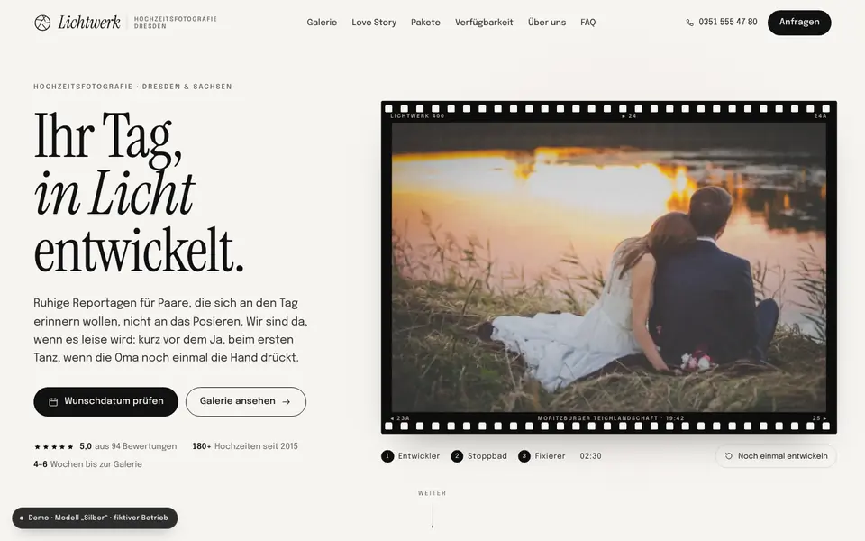
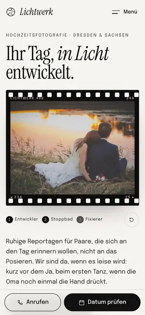

Case Study 30 / 30 · Kreativ & Handel
Lichtwerk Hochzeitsfotografie
Modell „Silber“
Fotografenseite mit Galerie und Lightbox, Paket-Konfigurator und Verfügbarkeits-Kalender.


Verfügbarkeit im Kalender ist Demo-Status aus Zufallswerten, für echte Daten durch feste Termine zu ersetzen.
Ausgangslage
Lichtwerk ist ein erfundenes Atelier für Hochzeitsfotografie in Dresden. Paare schauen sich zuerst die Bilder an, dann wollen sie wissen, was ein Tag kostet und ob ihr Termin noch frei ist. Die Seite soll die Galerie in den Mittelpunkt stellen und die drei Fragen Stil, Preis und Datum vor der Anfrage beantworten.
Idee
Das Modell „Silber“ ist filmisch und still: Papierweiß, Silbergrau, Schwarz und ein Hauch Rosé, Instrument Serif kursiv für Überschriften, Epilogue für Text, Filmkorn und Perforation als Details. Der Hero funktioniert wie ein Entwicklungsbad – das Foto entsteht per WebGL-Shader aus Schwarz über ein orangefarbenes Negativ zum Positiv, mit Anzeige für Entwickler, Stoppbad und Fixierer. Die Analogie zur Dunkelkammer trägt durch die ganze Seite, bis zum Kontaktbogen in der Galerie.
Was die Seite kann
- Galerie mit Kapitel-Tabsjustierte Reihen wie ein Kontaktbogen, Lightbox als Dialog mit Pfeiltasten, Esc und Wischgeste, dazu eine Kontaktabzug-Leiste mit Fettstift-Markierung.
- Paket-KonfiguratorStunden-Slider, Second Shooter, Verlobungsshooting und Album ergeben live einen Preis auf einem „Laborauftrag“, der ins Anfrageformular übernommen wird.
- Verfügbarkeits-CheckMonatskalender mit Demo-Status frei, angefragt oder belegt, Tastaturbedienung, Vorschlag freier Ausweichtermine und Übernahme des Datums ins Formular.
- Love Storyab 900 px eine gepinnte, horizontale Bildstrecke, in der sich die Bilder beim Durchlaufen entwickeln; darunter eine vertikale Zeitleiste.
- Entwicklungsbad-Hero mit „Noch einmal entwickeln“, Rücklauf auf CSS-Filter ohne WebGL und ruhigem Standbild bei reduzierter Bewegung.
- Atelier und Region als SVG-Karte, FAQ und Anfrageformular mit Demo-Hinweis.
Dein Betrieb
So eine Seite für dich?
Schreib mir kurz, was du anbietest und was deine Website leisten soll. Du bekommst eine ehrliche Einschätzung, was sie kostet und was sie dir bringen kann.
Projekt anfragen